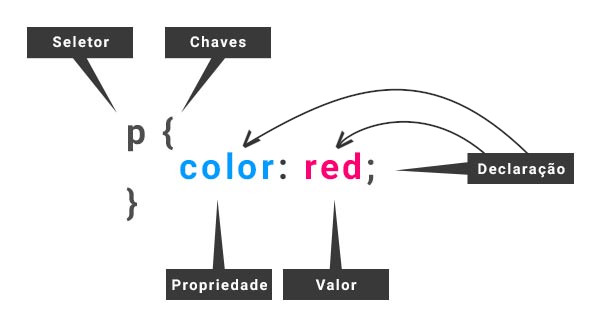

voltar
Sobre (CSS)
Comentário em CSS: entre /* e */
Evitar error de caráctere em arquivo CSS: @charset "UTF-8"
Cascading Style Sheets
Cascatando estilo folhas
Regras:

A declaração é cada propriedade com o valor!
CSS no HTML:
Com ordem de prioridade!
- Inline: usado como atributo de TAG, com função pontual.
- - Procure sempre evitá-la!
- EX:
<h1 style="">
- Internal: usado dentro do HEAD, com função local.
- - Use para pequenas configurações!
- EX:
<head><style>...</style></head>
- External: usado fora do HTML, com função global.
- - Use sempre que puder!
- Chamamos, assim:
<head>link:css</head>
ou <head><link rel="stylesheet href="..."></head>